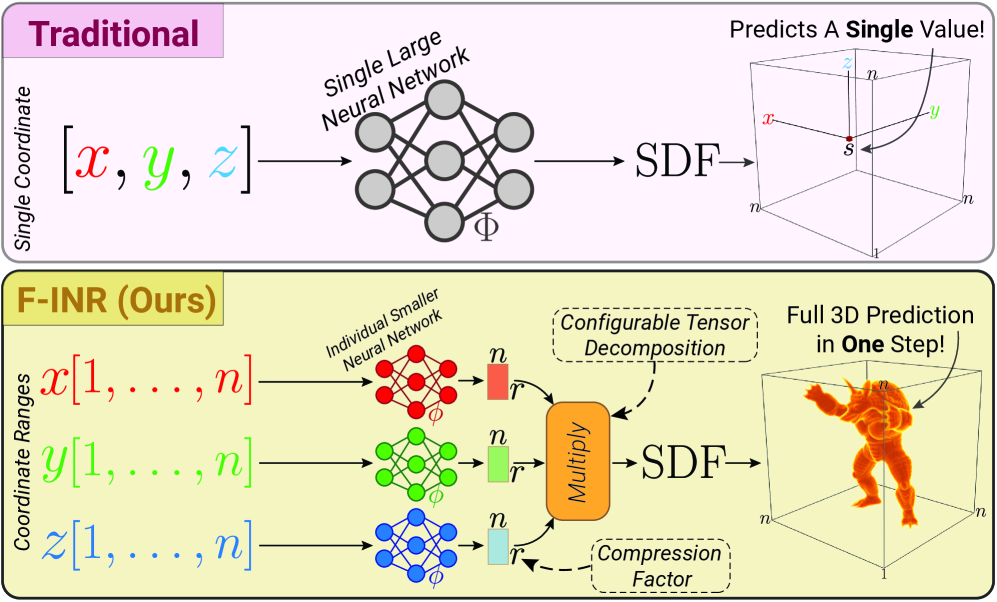
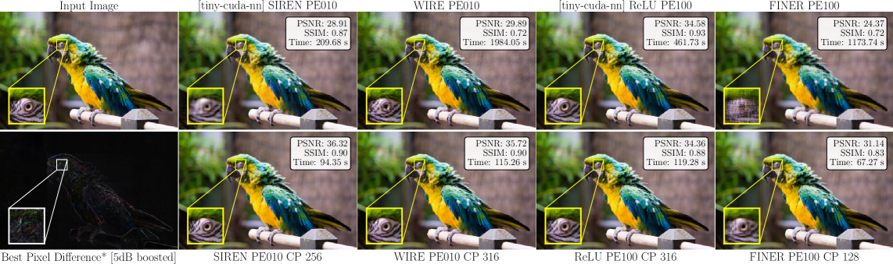
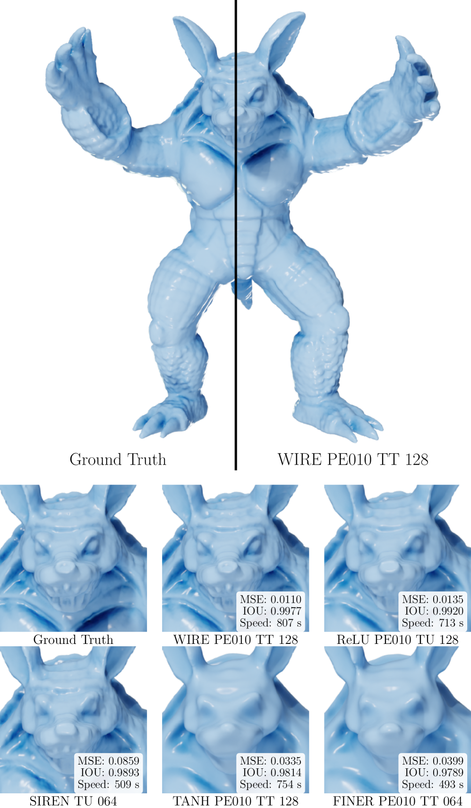
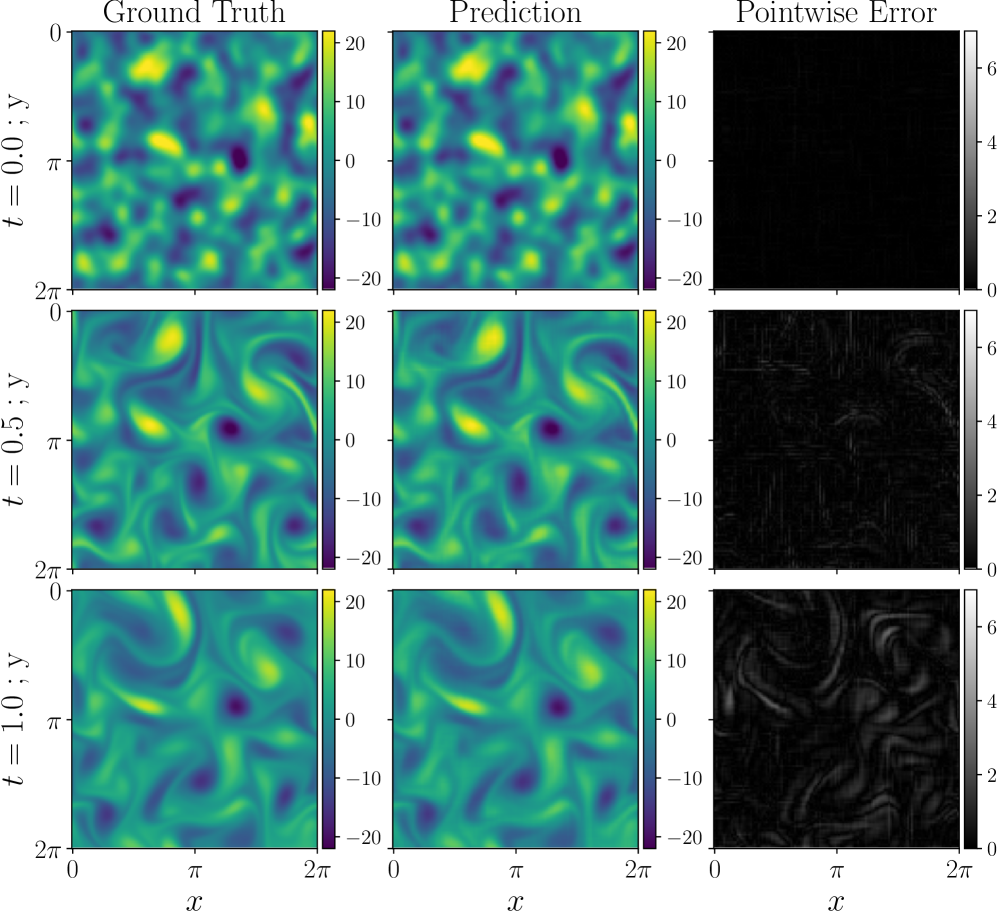

Implicit Neural Representations (INRs) model signals as continuous, differentiable functions.
However, monolithic INRs scale poorly with data dimensionality, leading to excessive training costs.
We propose F-INR, a framework that addresses this limitation by factorizing a high-dimensional INR into a set of compact, axis-specific sub-networks based on functional tensor decomposition.
These sub-networks learn low-dimensional functional components that are then combined via tensor operations.
This factorization reduces computational complexity while additionally improving representational capacity.
F-INR is both architecture- and decomposition-agnostic.
It integrates with various existing INR backbones (e.g., SIREN, WIRE, FINER, Factor Fields) and tensor formats (e.g., CP, TT, Tucker), offering fine-grained control over the speed-accuracy trade-off via the tensor rank and mode.
Our experiments show F-INR accelerates training by up to 20× and improves fidelity by over 6.0 dB PSNR compared to state-of-the-art INRs.
We validate these gains on diverse tasks, including image representation, 3D geometry reconstruction, and neural radiance fields.
We further show F-INR's applicability to scientific computing by modeling complex physics simulations.
Thus, F-INR provides a scalable, flexible, and efficient framework for high-dimensional signal modeling.
Key Contributions
Functional Tensor Decomposition for INRs.
We introduce a new paradigm for representation learning that is orthogonal to network design: factorizing a high-dimensional INR into compact, axis-specific sub-networks via established tensor decomposition modes (CP, TT, Tucker).
F-INR: a modular, agnostic framework.
F-INR is both architecture-agnostic (works with SIREN, WIRE, FINER, Factor Fields, ReLU/Tanh ± positional/hash encoding) and decomposition-agnostic, giving fine-grained control over the speed–accuracy trade-off through tensor rank and mode.
Significant empirical gains.
F-INR accelerates training by up to 20× while improving reconstruction fidelity by over 6.0 dB PSNR compared to state-of-the-art INRs across image representation, 3D geometry (SDF), neural radiance fields, and physics-informed simulations.
Method

Figure 1: Efficient INRs via Functional Tensor Decomposition.
INR models use a single, large network to predict one value (or a batch of values) at a time.
Our approach decomposes the function into smaller networks, enabling full prediction in a single
step with configurable tensor decomposition modes and compression ranks.
A conventional INR learns a monolithic network \(\Phi_\theta : \mathbb{R}^d \mapsto \mathbb{R}^c\)
that maps a \(d\)-dimensional coordinate to a \(c\)-variate output signal.
The curse of dimensionality means that the number of parameters, and thus training cost,
grows exponentially with the input dimensionality.
F-INR addresses this by replacing the monolithic network with a product of \(d\) small,
univariate sub-networks:
where \(\phi_i(\cdot)\) denotes a univariate neural network for the \(i\)-th dimension with
learnable parameters \(\theta_i\). Each network produces a component of particular rank \(R\)
to restore the original signal via classical tensor decomposition modes \((\bigotimes)\).
The decomposition tensors have continuous functions as bases, yielding
functional tensor decomposition; hence the name F-INR.
The outputs are combined via \(\bigotimes\) corresponding to one of three classical modes:
CP (Canonic-Polyadic) — \(d\) factor networks of rank \(R\), combined by element-wise product and summation.
TT (Tensor Train) — a chain of low-rank tensor cores; two factor networks and one decomposition core.
Tucker (TU) — factor networks plus a small core tensor \(\mathbf{C}\) capturing inter-mode interactions.
This reformulation reduces forward-pass complexity (see Table 1), preserves full differentiability
with respect to input coordinates (enabling PDE-based objectives), and is backend-agnostic,
any INR architecture can serve as the sub-network backbone.
Table 1: Forward Pass Complexity
Assuming a grid of \(n \times n \times n\), i.e.\ \(n^3\) data points, and a network with \(m\) features and \(l\) layers. Note \(r \ll m^2 l\).
Mode
Forward Pass
Sub-networks
CP
\(\mathcal{O}(n \cdot d \cdot r \cdot m \cdot l + r \cdot n^d)\)
\(d\) factor networks
TT
\(\mathcal{O}(n \cdot d \cdot r^2 \cdot m \cdot l + r^2 \cdot n^d)\)
2 factors + 1 core
Tucker (TU)
\(\mathcal{O}(n \cdot d \cdot r \cdot m \cdot l + r^d)\)
\(d\) factors + core \(\mathbf{C}\)
Experiments
We evaluate F-INR on four tasks using a standard four-layer MLP with 256 features, trained for 50k steps with Adam (lr=10−4) on an NVIDIA RTX 3090.
We test seven INR backends (ReLU, Tanh, SIREN, WIRE, FINER, Factor Fields, and variants with positional/hash encoding) across all three decomposition modes (CP, TT, Tucker) and a range of ranks, resulting in 136 configurations reported in the supplementary material.
Image Representation
Images are second-order tensors, so a rank-\(R\) CP decomposition (two axis-specific networks
combined via matrix multiplication) suffices. In a conventional INR, an image is represented as
\(\Phi_\theta(x, y) = (r, g, b)\). F-INR instead learns
\(\phi_1(\mathbf{x};\theta_1) \otimes \phi_2(\mathbf{y};\theta_2) = (\mathbf{r}, \mathbf{g}, \mathbf{b})\)
where \(\otimes\) denotes matrix multiplication.
Evaluated on the DIV2K parrot benchmark against LIIF, DeepTensor, NeuRBF, CoordX, and Factor Fields;
all models trained with batch size \(2^{18}\).
F-INR (SIREN) achieves +7.29 dB PSNR while cutting training from 3:22 to 1:49 min.
F-INR (FINER+PE) gains +8.22 dB PSNR with a \(14\times\) speedup.
F-INR (WIRE) offers a \(15\times\) speedup (31:28 → 2:07 min) with +2.33 dB PSNR.
F-INR (Factor Fields, rank 128) reaches 46.48 dB PSNR, the top result in the comparison.
Speedups over native backends reach \(20\times\); over optimized tiny-cuda-nn kernels \(2.2\times\).

Figure 3: Qualitative Image Results.
F-INR improves both fidelity and training speed over the original backbones.
Fidelity improvements reach up to \(+7\,\text{dB}\) (SIREN) and training speedups reach \(20\times\)
for native backbones (WIRE) and \(2.2\times\) for optimized CUDA implementations (ReLU). Error maps are
magnified for visualization.
Table 2: Quantitative Image Results
PSNR \((\uparrow)\) and SSIM \((\uparrow)\) on the DIV2K parrot image (mean \(\pm\) std over 5 runs). ΔPSNR is relative to the corresponding baseline. † denotes tiny-cuda-nn implementation; * denotes convergence at 10k steps.
Method
Backend
Rank
PSNR (dB)
ΔPSNR
SSIM
Time
INR Baselines
Tanh †
–
–
25.04
–
0.82
5:51
ReLU+PE †
–
–
34.35
–
0.95
5:58
ReLU+Hash (iNGP) †
–
–
36.22
–
0.96
7:40
SIREN †
–
–
28.89
–
0.97
3:22
WIRE
–
–
32.06
–
0.87
31:28
FINER
–
–
22.73
–
0.75
22:45
NeuRBF *
–
–
41.61
–
0.95
8:22
Factor Fields *
–
–
41.82
–
0.95
1:35
F-INR (ours)
F-INR
WIRE
316
34.39
+2.33
0.89
2:07
F-INR
WIRE+PE
316
35.72
+3.66
0.90
2:07
F-INR
SIREN
256
36.18
+7.29
0.90
1:49
F-INR
SIREN+PE
256
36.28
+7.39
0.90
1:52
F-INR
FINER+PE
128
30.95
+8.22
0.83
1:33
F-INR
Factor Fields *
128
46.48
+4.66
0.98
2:40
3D Geometry via Signed Distance Functions
F-INR learns SDFs from dense voxel grids using a physics-informed Eikonal loss evaluated
on Stanford 3D Scan geometries (Armadillo and others). The loss combines three terms:
enforcing \(\|\nabla\Psi\|=1\) everywhere, global fidelity to \(\hat{\Psi}\), and extra
accuracy near the object surface \(\Omega_{<\Omega_0}\). This objective requires stable high-order gradients w.r.t. input coordinates, making discrete-lookup methods (TensoRF, hash grids, Factor Fields) incompatible.
F-INR (WIRE+PE, TT, rank 128) achieves IoU 0.997 and MSE 0.011 on Armadillo in only 13:27 min.
F-INR (ReLU+PE, TU, rank 128) achieves IoU 0.992 in 11:54 min — \(>20\times\) faster than the 250+ min baselines.
Results surpass specialized methods (DeepSDF, IGR) on all tested geometries.

Figure 4: Qualitative SDF Results.
F-INR models with strong inductive biases (WIRE, SIREN, ReLU+PE) capture fine geometric details
with high fidelity. Others (Tanh, FINER) preserve macro-structure but fail to reconstruct
high-frequency details, resulting in oversmoothed surfaces and lower IoU scores.
Table 3: Quantitative SDF Results (Armadillo)
IoU \((\uparrow)\) and MSE \((\downarrow)\) over 5 runs. † = no Eikonal regularization. * = RTX 6000 Ada.
Method
Backend
Mode
Rank
IoU (↑)
MSE (↓)
Time
INR Baselines
ReLU+PE
–
–
–
0.950
0.233
257:08
WIRE
–
–
–
0.988
0.154
252:14
SIREN
–
–
–
0.989
0.127
252:45
FINER
–
–
–
0.989
0.125
217:10
DeepSDF
–
–
–
0.989
0.126
315:32
IGR
–
–
–
0.990
0.127
292:13
NeuRBF †*
–
–
–
0.997
0.153
5:22
Factor Fields †
–
–
–
0.972
10−6
5:24
F-INR (ours)
F-INR
Tanh
TT
128
0.941
0.034
12:34
F-INR
ReLU+PE
TU
128
0.992
0.013
11:54
F-INR
WIRE+PE
TT
128
0.997
0.011
13:27
F-INR
SIREN
TU
64
0.989
0.085
8:29
F-INR
FINER+PE
TT
64
0.978
0.039
8:13
Neural Radiance Fields
Neural Radiance Fields represent a 3D scene as a continuous function mapping a 5D input
\((x,y,z,\theta,\phi)\) to a 4D output of color and volume density.
F-INR factorizes this 5D function into five univariate sub-networks, one per coordinate axis:
replacing a monolithic 3D hash grid with three independent 1D hash encodings while keeping
all other NeRF components unchanged.
Evaluated on the synthetic NeRF dataset (Lego and Drums scenes).
F-INR (ReLU+HE, TT, rank 16) achieves 35.67 dB PSNR on Lego and 26.48 dB on Drums in 22.4 min.
This exceeds K-Planes (34.23 dB / 76.8 min) and TensoRF (33.14 dB / 25.8 min) in both fidelity and speed.
TT decomposition outperforms CP and Tucker across all tested rank configurations.
A CUDA-optimized F-INR implementation is expected to yield further gains beyond the current pure-PyTorch results.
Figure 5: Qualitative NeRF Results.
Novel view renderings from the best-performing F-INR model (ReLU+HE, TT rank 16) on the
Lego (top) and Drums (bottom) scenes. The results demonstrate the model's ability to
reconstruct fine geometric details and complex view-dependent effects with high fidelity.
Table 4: Quantitative NeRF Results
PSNR (dB) on the synthetic NeRF dataset. * = RTX 6000 Ada.
Method
Mode
Rank
Lego (↑)
Drums (↑)
Time
Baselines
NeRF
–
–
30.83
22.01
135 h
DVGO
–
–
31.25
24.90
24.4 min
Plenoxels
–
–
31.71
24.48
22.5 min
TensoRF
–
–
33.14
25.26
25.8 min
ReLU+Hash (iNGP)
–
–
34.59
25.28
4.8 min
NeuRBF *
–
–
37.29
26.57
1.1 h
Factor Fields
–
–
33.14
26.57
28.4 min
K-Planes
–
–
34.23
25.30
76.8 min
F-INR (ours, ReLU+HE)
F-INR
CP
4
31.87
24.55
5.8 min
F-INR
CP
8
33.88
25.12
8.1 min
F-INR
CP
16
34.81
25.30
18.3 min
F-INR
TT
8
34.24
25.07
16.2 min
F-INR
TT
16
35.67
26.48
22.4 min
F-INR
TU
8
31.22
23.02
28.6 min
Physics-Informed Learning
F-INR is applied to learning decaying turbulence governed by the incompressible Navier-Stokes
equations in vorticity form:
\[
\partial_t \omega + u \cdot \nabla\omega = \nu\,\Delta\omega,
\quad x \in \Omega,\; t \in \Gamma, \tag{3a}
\]
\[
\nabla \cdot u = 0, \quad x \in \Omega,\; t \in \Gamma, \tag{3b}
\]
\[
\omega(x,0) = \omega_0(x), \quad x \in \Omega, \tag{3c}
\]
where \(u\) is the velocity field, \(\omega = \nabla \times u\) is the vorticity,
\(\omega_0\) is the initial vorticity, and \(\nu = 0.01\) is the viscosity coefficient.
The spatial domain is \(\Omega \in [0, 2\pi]^2\) and the temporal domain \(\Gamma \in [0,1]\).
The model is trained on sparse, coarse data (\(10 \times 64 \times 64\) resolution) and
must generalize to the full \(101 \times 128 \times 128\) grid — a \(40\times\) reduction
in supervision. The composite loss
\(\mathcal{L} = \mathcal{L}_{\text{data}} + \mathcal{L}_{\text{PDE}}\)
enforces physical consistency at domain collocation points.
F-INR (ReLU+PE, TT, rank 128) achieves MSE 0.030, surpassing the previous best PhySR (0.038).
Training time drops from 27 h to under 2 h, a \(>20\times\) speedup.
F-INR is the first successful application of the WIRE backbone to a complex physics simulation.
No time-marching is required; F-INR learns a single continuous function over the full spatio-temporal domain.

Figure 6: Qualitative PINN INR Results.
Vorticity field ground truth (left), F-INR prediction (ReLU+PE, TT rank 128, middle), and
pointwise absolute error (right) at three time steps. Trained on sparse data, the model
captures the complex dynamics across the full temporal domain. Error concentrates on
high-gradient regions (vortex edges) and grows as turbulence develops.
Table 5: Quantitative PINN INR Results
MSE \((\downarrow)\) on the Navier-Stokes benchmark (mean \(\pm\) std). Models trained from \(10\times 64\times 64\) coarse data; evaluated at \(101\times 128\times 128\) full resolution.
Method
Backend
Mode
Rank
MSE (↓)
Time
Baselines
ReLU+PE
–
–
–
0.097
20:30
WIRE
–
–
–
0.073
20:25
SIREN
–
–
–
0.184
20:24
ModifiedPINN
–
–
–
0.074
28:40
CausalPINN
–
–
–
0.070
33:12
MeshFreeFlowNet
–
–
–
0.048
35:18
PhySR
–
–
–
0.038
27:05
F-INR (ours)
F-INR
WIRE
TT
64
0.034
0:59
F-INR
WIRE
TT
256
0.033
1:40
F-INR
ReLU+PE
TT
64
0.033
0:51
F-INR
ReLU+PE
TT
128
0.030
1:12
F-INR
ReLU+PE
TT
256
0.030
1:59
F-INR
ReLU+PE
TU
128
0.032
1:34
F-INR
ReLU+PE
TU
256
0.032
2:03
Acknowledgements
A great number of people have contributed to this paper, whether consciously or not.
We especially thank the members of our group for their contributions throughout the revisions
of this manuscript, which ultimately brought it to a publication-worthy state.
BibTeX
If you find our work useful, utilize with our models, start your own research with our data set, or use our parts of our code, please cite our work:
@InProceedings{Vemuri_2026_WACV,
author = {Vemuri, Sai Karthikeya and B\"uchner, Tim and Denzler, Joachim},
title = {F-INR: Functional Tensor Decomposition for Implicit Neural Representations},
booktitle = {Proceedings of the IEEE/CVF Winter Conference on Applications of Computer Vision (WACV)},
month = {March},
year = {2026},
pages = {6557-6568}
}
{kind=link}